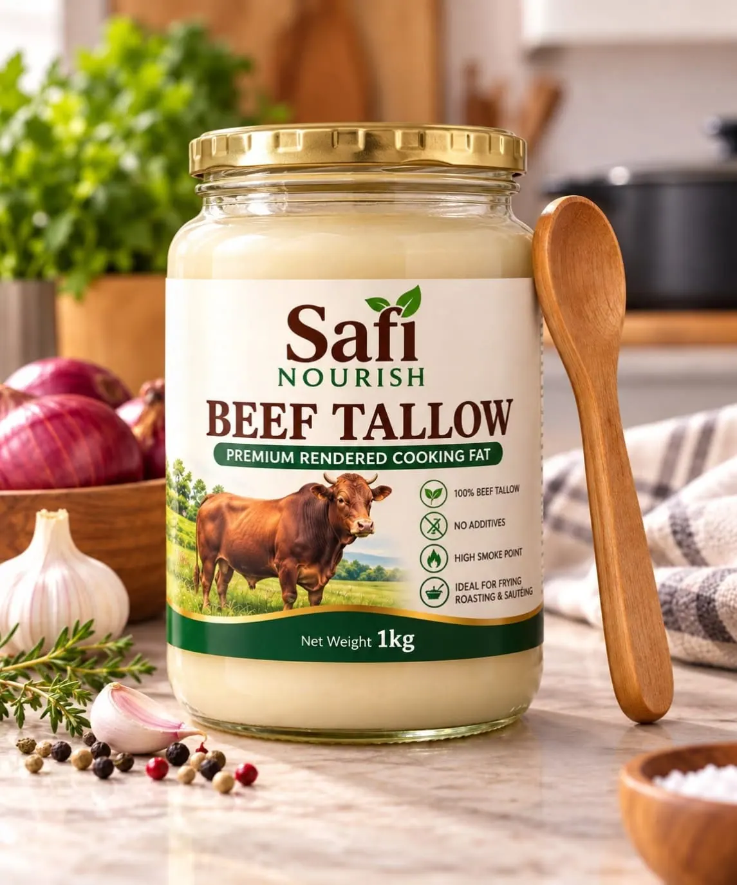
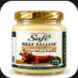
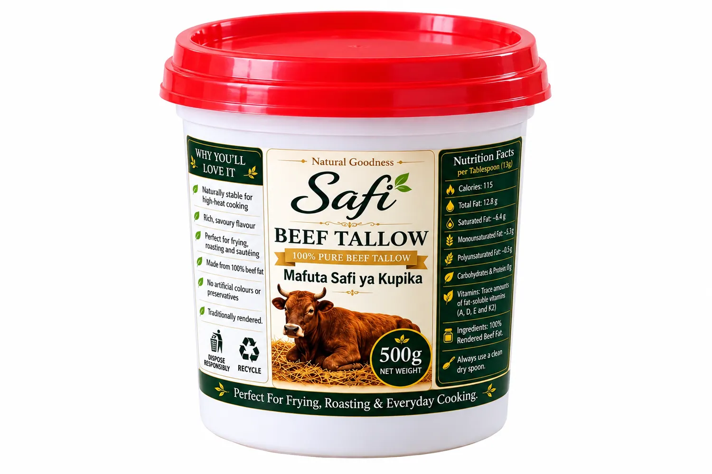

BEEF TALLOW • Glass jar
Beef Tallow — 1kg Glass Jar
An everyday cooking staple in glass packaging.
1 kgGlass jar
KSh 850
Add to CartAll Safi Beef Tallow products together: glass jars and red-lid plastic packs, in 500 g and 1 kg options.
Every pack and its price are displayed below. Choose a product and order directly through WhatsApp.

An everyday cooking staple in glass packaging.

A compact glass pack for smaller households.

Practical pack with a red lid.

A smaller red-lid pack for daily cooking.